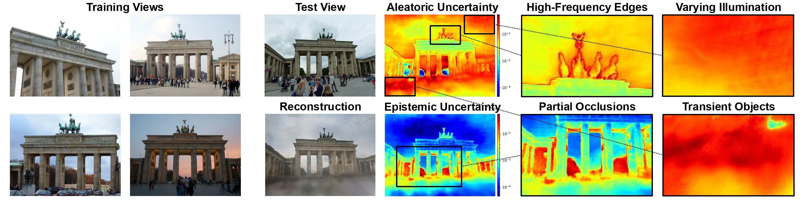
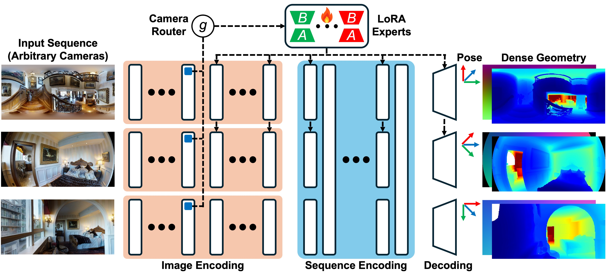
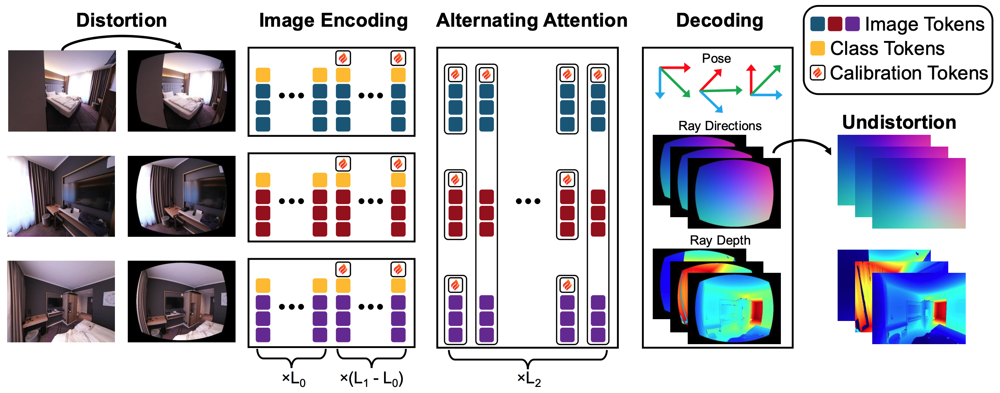
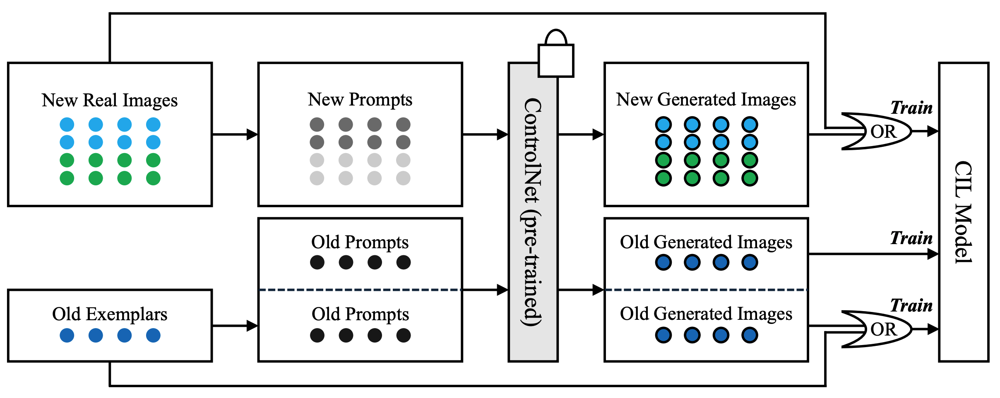
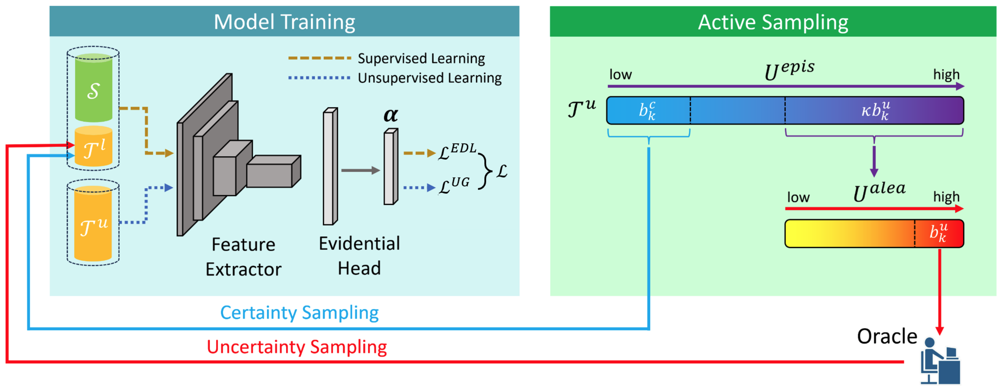

Research: Camera-adaptive feed-forward 3D reconstruction
I am a Ph.D. student in Computer Science at Yale University. I develop trustworthy, explainable, and adaptive spatial intelligence systems that can reconstruct and understand 3D/4D scenes from diverse sensors, recognize their own failure modes, and adapt to changing environments and sensor configurations while retaining previous knowledge. My research brings together 3D/4D computer vision, uncertainty quantification, multimodal learning, and continual learning to build reliable spatial systems for challenging real-world settings.
Research: Camera-adaptive feed-forward 3D reconstruction
Yale University (Ph.D. in Computer Science)
Advisor: Prof. Alex Wong
Research: 3D/4D scene reconstruction, neural rendering
Johns Hopkins University (M.S. in Data Science)
Advisors: Prof. Alan Yuille and Prof. Craig Jones
Research: Continual learning, uncertainty quantification
The University of Hong Kong (B.Eng. in Computer Science)
Honors: First Class Honors, Dean's List

CVPR 2026 (Oral, Best Paper Award Candidate)

NeurIPS 2026


